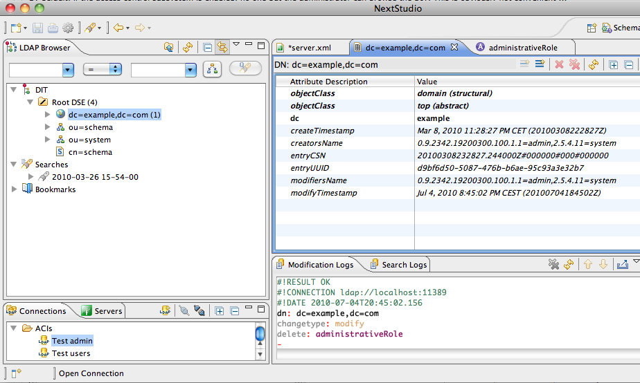
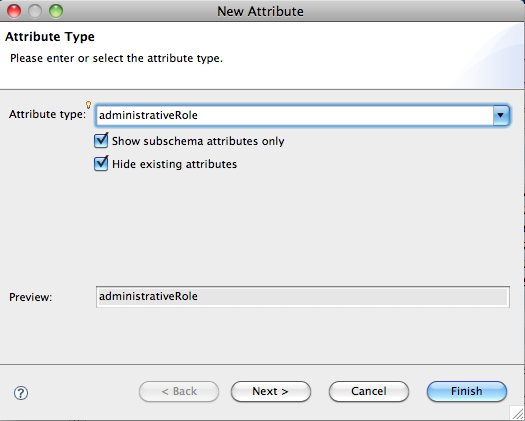
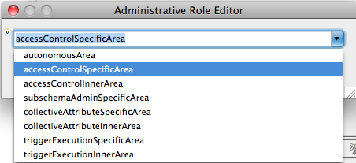
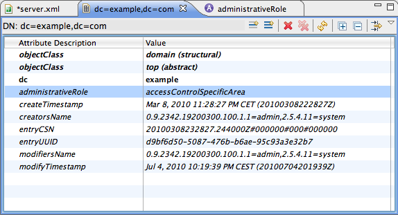
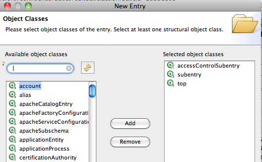
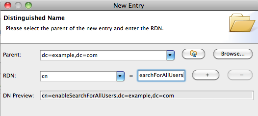
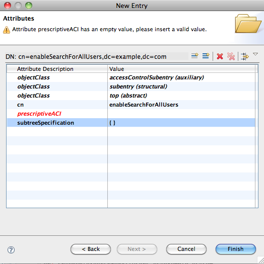
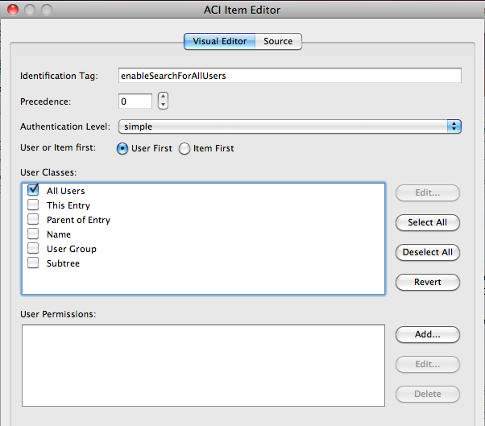
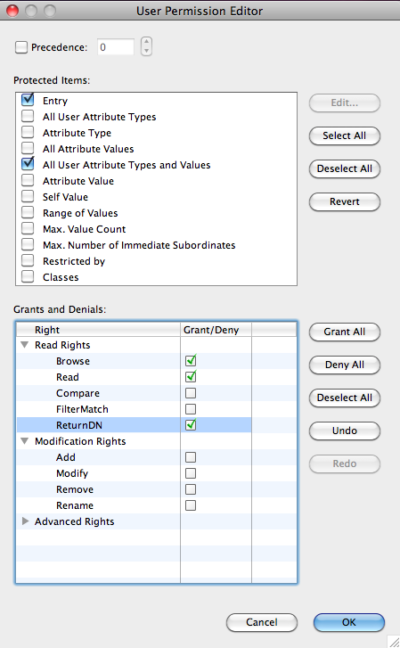

ApacheDS 2.0
Downloads
Documentation
- Basic User Guide
- Advanced User Guide
- Developer Guide
- Kerberos User Guide
- Configuration
- JavaDocs
- Cross-Reference
Support
Community
About Apache
4.2.7.1 - Enable Authenticated Users to Browse and Read Entries
In this trail, we will show how we will allow all authenticated users to browse and read all the entries.
By default, if the access control subsystem is enabled, no one but the administrator can browse the DIT. This is obviously not convenient …
Partition and Access Control Area Setup
For this example we presume you have setup a partition at the namingContext dc=example,dc=com and have turned on access controls. Now you want to grant browse and read access to entries and their attributes.
Before you can add a subentry with the prescriptiveACI you’ll need to create an administrative area. For now we’ll make the root of the partition the Administrative Point (AP). Every entry including this entry and those underneath will be part of the autonomous administrative area for managing access controls. To do this we must add the administrativeRole operational attribute to the AP entry.
AdministrationPoint setup
In our case, the dc=example,dc=com context entry has to contain the administrativeRole attribute, with the accessControlSpecificArea value.
Let’s first connect to the server using the admin user, and select the dc=example,dc=com entry :

We will now add the directoryOperation attribute administrativeRole to this entry :

and we select the accessControlSpecificArea value :

Here is the resulting entry :

Subentry addition
Now, we have to create a subentry in which we will add the prescriptiveACI granting access to all the users.
Let’s define the ACI first.
ACIItem Description
Here’s the ACIItem we will add :
{
identificationTag "enableSearchForAllUsers",
precedence 14,
authenticationLevel simple,
itemOrUserFirst userFirst:
{
userClasses { allUsers },
userPermissions
{
{
protectedItems {entry, allUserAttributeTypesAndValues},
grantsAndDenials { grantRead, grantReturnDN, grantBrowse }
}
}
}
}
There are several parameters to this simple ACIItem. Here’s a brief explanation of each field and it’s meaning or significance.
| Fields | Description |
|---|---|
| identificationTag | Identifies the ACIItem within an entry. |
| precedence | Determine which ACI to apply with conflicting ACIItems. |
| authenticationLevel | User’s level of trust with values of none, simple, strong |
| itemOrUserFirst | Determines order of item permissions or user permissions. |
| userClasses | The set of users the permissions apply to. |
| userPermissions | Permissions on protected items |
In our case, we want to grant all the users :
userClasses { allUsers }
to be granted a read access :
grantsAndDenials { grantRead, grantReturnDN, grantBrowse }
for the Entry and all the values :
protectedItems {entry, allUserAttributeTypesAndValues},
The granted permissions are used to allow the user to browse the tree (grantBrowse), read the entries (grantRead) and return the DN for aliases (grantReturnDN).
PrescriptiveACI addition
Now that we have defined the ACIItem**, we have to add it into a **subentry** associated with the **administration point**. This is just an entry under the **administration Point**, here, we will call it **cn=enableSearchForAllUsers, dc=example,dc=com**.
The entry is described below in a LDIF format :
dn: cn=enableSearchForAllUsers,dc=example,dc=com
objectClass: top
objectClass: subentry
objectClass: accessControlSubentry
subtreeSpecification: {}
prescriptiveACI:
{
identificationTag "enableSearchForAllUsers",
precedence 14,
authenticationLevel simple,
itemOrUserFirst userFirst:
{
userClasses { allUsers },
userPermissions
{
{
protectedItems {entry, allUserAttributeTypesAndValues}
grantsAndDenials { grantRead, grantReturnDN, grantBrowse }
}
}
}
}
It’s also easy to create such an entry with Apache Directory Studio. First, right click on the context entry, and select ‘new Entry’ :

Then create a new entry from scratch, and select the ‘subentry’ and ‘accessControlSubentry’ ObjectClasses :

Create the RDN for this new entry :

Pass the subtree editor, we don’t need to define anything here, and go to the Attributes definition :

The next step is to add the prescriptiveACI value, using the dedicated editor :

When the selection has been done, we have to add the permissions :

Once done, all the entries under dc=example,dc=com are ruled by this ACI